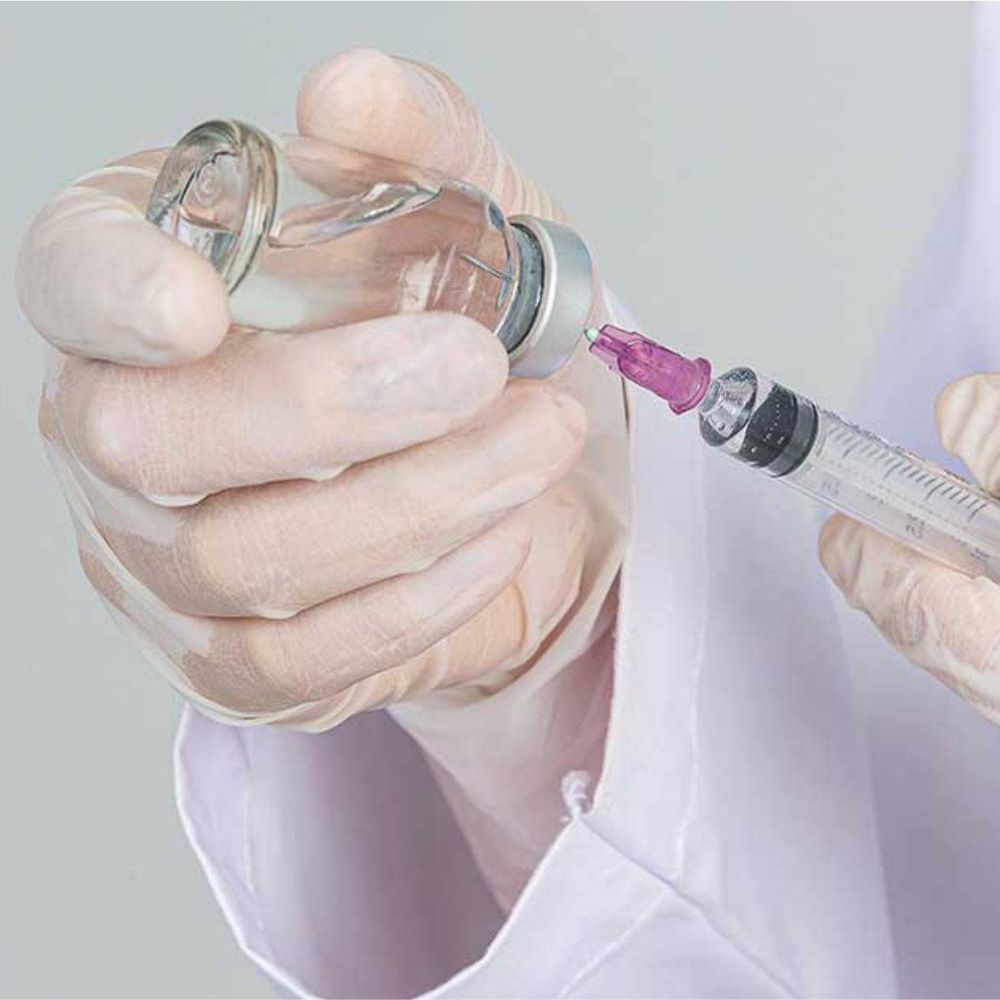

Saiba Mais
Introdução


Gadolínio
Utilizado principalmente em Ressonância Magnética.

Iodado
Usado em Tomografias Computadorizadas e Radiografias.
Os meios de contraste são substâncias utilizadas em exames de imagem para melhorar a visualização das estruturas internas do corpo. Este informativo compara os dois tipos principais de meios de contraste: Gadolínio e Iodado.